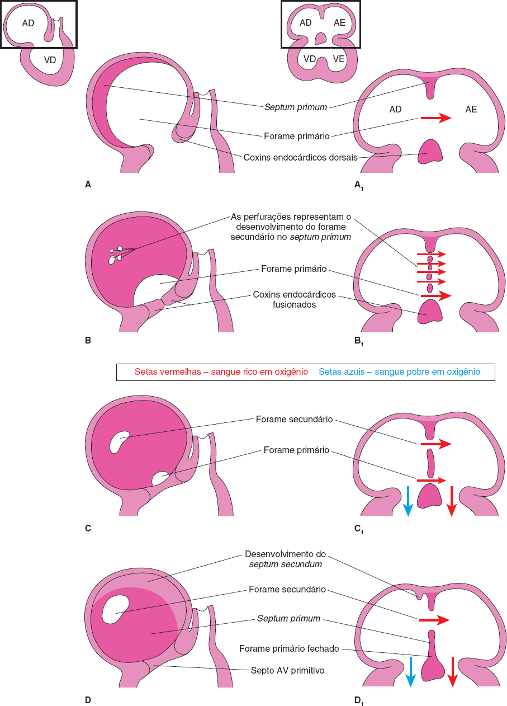
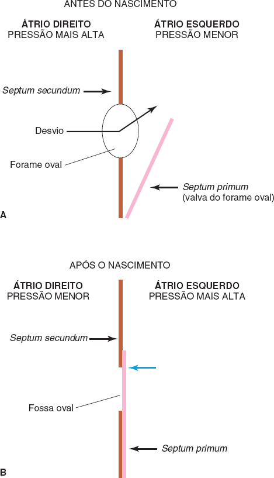
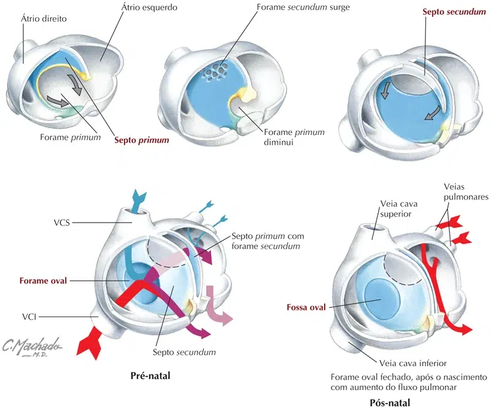

A partir do final da 4ª semana, o átrio primitivo é dividido em átrios direito e esquerdo pela formação e subsequente modificação e fusão de dois septos: o septum primum e o septum secundum (forame secundário).
O septum primum, uma fina membrana em forma de crescente, desenvolve-se em direção aos coxins endocárdicos fusionados do teto do átrio primitivo, dividindo parcialmente o átrio comum em metades direita e esquerda.
À medida que o septum primum muscular, semelhante a uma cortina, cresce, uma grande abertura (forame primário) permanece entre sua margem livre em crescente e os coxins endocárdicos. Esse forame serve como desvio (shunt), permitindo que o sangue rico em oxigênio passe do átrio direito para o átrio esquerdo.
O forame torna progressivamente menor e desaparece à medida que a parte superior (mesenquimal) do septum primum se une aos coxins endocárdicos AV fusionados para formar o septo AV primitivo.
Antes de o forame primário desaparecer, surgem perfurações produzidas por apoptose na parte central do septum primum. Essas perfurações coalescem para formar outra abertura no septum primum, o forame secundário.
Conforme a margem livre do septum primum se une ao lado esquerdo dos coxins endocárdicos fusionados, obliterando o forame primário, o forame secundário garante o desvio contínuo de sangue rico em oxigênio do átrio direito para o átrio esquerdo.
O septum secundum, uma espessa prega muscular em crescente, desenvolve-se a partir da parede ventrocranial muscular do átrio direito, imediatamente adjacente ao septum primum. Conforme esse septo espesso cresce, entre a 5ª e a 6ª semanas, ele gradualmente sobrepõe o forame secundário no septum primum.
O septum secundum forma uma divisão incompleta entre os átrios; consequentemente, há a formação do forame oval.
A parte cranial do septum primum, inicialmente ligada ao teto do átrio esquerdo, gradualmente desaparece.
A parte remanescente do septo, unida aos coxins endocárdicos fusionados, forma a valva do forame oval.


